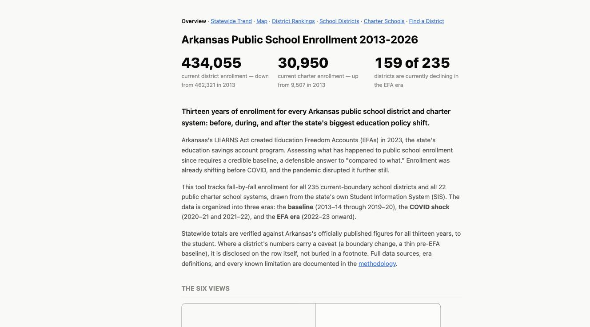
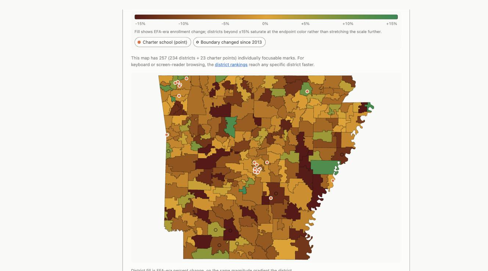
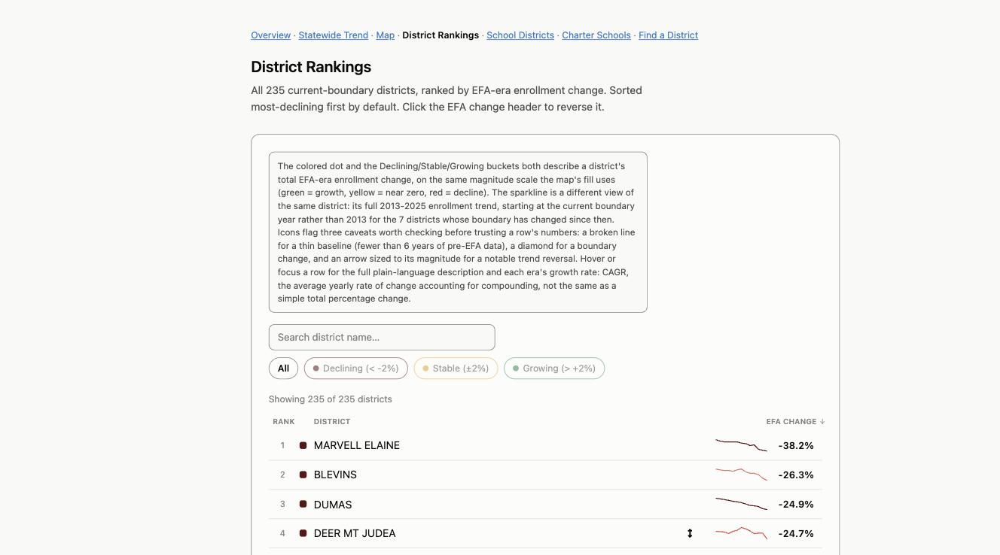

Background, current figures, and screenshots for reporters covering Arkansas K-12 enrollment.
Arkansas Public School Enrollment 2013-2026 tracks fall-by-fall enrollment for all 235 current-boundary Arkansas public school districts and all 22 public charter school systems, drawn from the state's own Student Information System (SIS). It covers thirteen years, before, during, and after the state's LEARNS Act created Education Freedom Accounts (EFAs) in 2023. Statewide totals are verified against Arkansas's officially published figures for all thirteen years, to the student.
Reflects the 2025-26 school year, the dataset's most recent year. These numbers will change as future school years are added; check the live site before publishing rather than treating this page as permanently current.



Full citation format and license terms are on the methodology page's How to cite this section.
Press contact: joelrush@gmail.com.